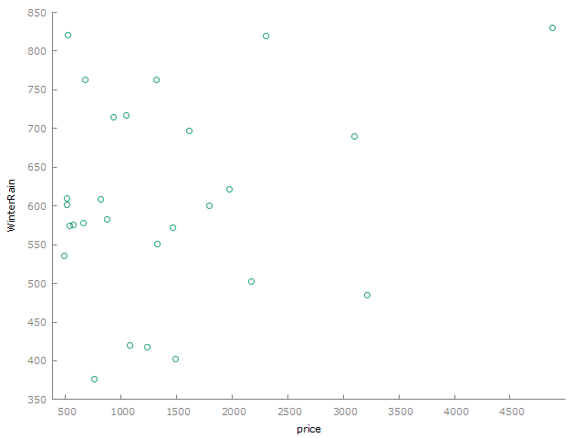
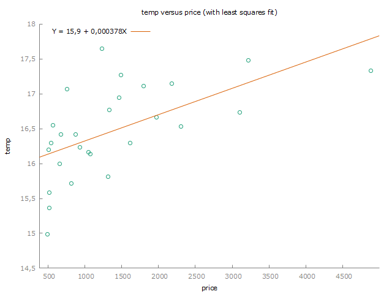
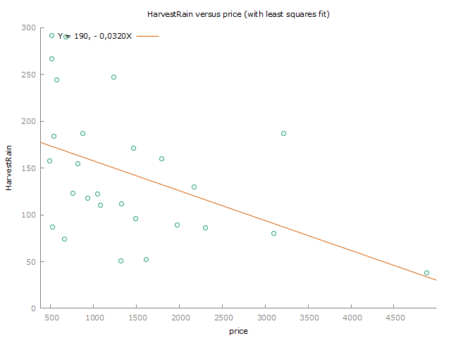
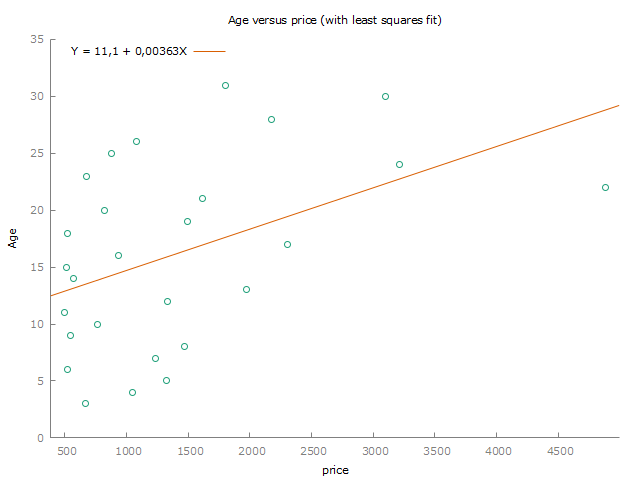

494.278 + (56.3183 * 3)[1] 663.2329Magnus Thronsen
Høgskolen i Østfold (HiOF)
| Mean | Median | S.D. | Min | Max | |
|---|---|---|---|---|---|
| price | 1405,8 | 1079,8 | 1027,2 | 495,17 | 4883,9 |
| WinterRain | 608,41 | 600,00 | 129,03 | 376,00 | 830,00 |
| temp | 16,478 | 16,417 | 0,65919 | 14,983 | 17,650 |
| HarvestRain | 144,81 | 123,00 | 73,066 | 38,000 | 292,00 |
| Age | 16,185 | 16,000 | 8,2464 | 3,0000 | 31,000 |




Model 3: OLS, using observations 1952-1980 (T = 27) Missing or incomplete observations dropped: 2 Dependent variable: price
| coefficent | std. error | t-ratio | p-value | |
|---|---|---|---|---|
| const | 494,278 | 402,112 | 1,229 | 0,2304 |
| Age | 56,3183 | 22,2218 | 2,534 | 0,0179 ** |
| Mean dependent var | 1405,800 | S.D. dependent var | 1027,226 |
| Sum squared resid | 21827151 | S.E. of regression | 934,3907 |
| R-squared | 0,204406 | Adjusted R-squared | 0,172582 |
| F(1, 25) | 6,423065 | P-value(F) | 0,017902 |
| Log-likelihood | −221,9495 | Akaike criterion | 447,8990 |
| Schwarz criterion | 450,4907 | Hannan-Quinn | 448,6697 |
494,278 is the estimated value of the dependent variable (price) when the age is zero.
For every year the wine ages, the estimated price increases by 56,3183. We consider this statistically significant at the most commonly used 5% level of significance, since the p-value of 0.0171 is less than 0.05. This is also marked with two stars in the output from Gretl.
Null Hypothesis (H₀): The Age coefficient = 0 (Age does not affect price).
\[
H_0 : \beta_1 = 0
\] Alt. Hypothesis (H₁): The Age coefficient is not equal to 0 (Age does have an effect on price).
\[
H_1 : \beta_1 != 0
\]
Testing on a 1% significance level with a p-value of 0.0179. The p-value is greater than 0.01, which means that we can’t reject the null hypothesis at the 1% significance level. In other words, we do not have enough statistical evidence that age has an effect on price at this level of significance.
The age is the independent variable. From the dataset we know that 3 is the minimum value, 16,185 is the mean value, and 31 is the maximum value. We also know that the constant is 494,278 and the coefficient for age is 56,3183.
Minimum age:
Mean age:
Maximum age:
For 95% confidence intervals, t(25, 0,025) = 2,060
| price | prediction | std. error | 95% interval | |
| 1961 | 4883,90 | 1733,28 | 960,270 | -244,433 - 3710,99 |
Forecast evaluation statistics using 1 observations
| Mean Error | 3150,6 |
| Root Mean Squared Error | 3150,6 |
| Mean Absolute Error | 3150,6 |
| Mean Percentage Error | 64,51 |
| Mean Absolute Percentage Error | 64,51 |
| Theil’s U2 | 0 |
The 95% interval is [-244,433 - 3710,99]
Model 1: OLS, using observations 1952-1980 (T = 27)
Missing or incomplete observations dropped: 2
Dependent variable: price
| coefficient | std. error | t-ratio | p-value | |
|---|---|---|---|---|
| const | -15509,0 | 3379,87 | -4,589 | 0,0001 *** |
| WinterRain | 2,75098 | 0,965119 | 2,850 | 0,0093 *** |
| Temp | 930,787 | 190,557 | 4,885 | 6,97e-05 *** |
| HarvestRain | -5,04694 | 1,61682 | -3,122 | 0,0050 *** |
| Age | 39,2126 | 14,3490 | 2,733 | 0,0121 ** |
| Mean dependent var | 1405,800 | S.D. dependent var | 1027,226 |
| Sum squared resid | 7238994 | S.E. of regression | 573,6246 |
| R-squared | 0,736141 | Adjusted R-squared | 0,688166 |
| F(4, 22) | 15,34443 | P-value(F) | 3,93e-06 |
| Log-likelihood | −207,0499 | Akaike criterion | 424,0999 |
| Schwarz criterion | 430,5791 | Hannan-Quinn | 426,0265 |
WinterRain: The coefficient is 2.75098, which means the price increases by that amount for each additional unit of WinterRain. We consider this statistically significant at the most commonly used 5% level of significance, since the p-value of 0.0093 is less than 0.05. The p-value of 0.0093 also means it’s statistically significant at the 1% level since it’s less than 0.001.
Temp: The coefficient is 930.787, which means the price increases by that amount for each additional unit of Temp. We consider this statistically significant at the most commonly used 5% level of significance, since the p-value of 6.97e-05 is less than 0.05. The p-value of 6.97e-05 also means it’s statistically significant at the 1% level since it’s less than 0.001.
HarvestRain:The coefficient is -5.04694, which means the price decreases by that amount for each additional unit of HarvestRain. We consider this statistically significant at the most commonly used 5% level of significance, since the p-value of 0.0050 is less than 0.05. The p-value of 0.0050 also means it’s statistically significant at the 1% level since it’s less than 0.001.
Age: The coefficient is 39.2126, which means the price increases by that amount for each additional unit of Age. We consider this statistically significant at the most commonly used 5% level of significance, since the p-value of 0.0121 is less than 0.05. The p-value of 0.0121 also means it’s not statistically significant at the 1% level since it’s higher than 0.001.
Looking at age just like we did in exercise 2, we see that the coefficient is now 39,2126. In exercise 2, it was 56,3183. The difference is that in exercise 2, we didnt take WinterRain, Temp and HarvestRain into consideration. These other variables were unknown.
We see now that the age increases less per unit compared to exercise 2 when we add the other variables to the equation. The difference is that we now estimate what effect one unit of age will have on the price, given that WinterRain, Temp and HarvestRain are the same.
The p-value has decreased slightly, but not enough to push it below the 1% significance level.
Model 2: OLS, using observations 1952-1980 (T = 27)
Missing or incomplete observations dropped: 2
Dependent variable: price
| coefficient | std. error | t-ratio | p-value | |
|---|---|---|---|---|
| const | −13319,6 | 3910,53 | −3,406 | 0,0023 *** |
| Temp | 902,820 | 236,963 | 3,810 | 0,0009 *** |
| DUM | −815,924 | 394,606 | −2,068 | 0,0496 ** |
| Mean dependent var | 1405,800 | S.D. dependent var | 1027,226 |
| Sum squared resid | 15211368 | S.E. of regression | 796,120 |
| R-squared | 0,445550 | Adjusted R-squared | 0,399345 |
| F(2, 24) | 9,643056 | P-value(F) | 0,000844 |
| Log-likelihood | −217,0745 | Akaike criterion | 440,1490 |
| Schwarz criterion | 444,0365 | Hannan-Quinn | 441,3050 |
This model includes a dummy variable which is a fixed effect. In this case it’s used to capture the effect of rainfall above 200mm. When the rainfall is above this threshold, it predicts a decrease in the price with - 815,924.
When it comes to the interaction with temperature, there is a possibility that high levels of rainfall means cooler temperatures. Seeing as a single unit of Temp estimates an increase in price of 902,820, we can say that higher temperatures are connected to higher prices. This means that if high rainfall affects the temperature in a negative way, it could lower the price.
The actual price of the 1961 vintage is 4,883.903, WinterRain is 830, temp is 17,3333, HarvestRain is 38, and Age is 22.
Model 1:
Price =
Residual for model 1 =
Model 2:
Price =
Residual for model 2 =
Model 3:
Price =
Residual for model 3 =
The residual for model 1 is quite large. This model only considers the age of the wine, and the model is probably too simple to correctly estimate the actual price of the 1961 vintage. The 1961 vintage is the most expensive out of all the wines, so the model probably needs more variables to correctly predict the price.
The residual for model 2 is still large, but considerably less than for model 1. This model includes all the variables we have available. Still, it predicts a moderate price for the 1961 vintage, compared to the actual price. However, seeing as the 1961 vintage is such an outlier, it would probably be impossible to correctly predict the price.
Model 3 faces the same challenges as model 1 and the residual is pretty large. There are not enough variables. It also mainly focuses on the outliers with high rainfall which are wines that usually are cheap. Another challenge with this model is that it doesn’t differentiate rainfalls between 0 and 200.
Based on the residuals I would prefer model 2 for predicting Bordeaux vintage wine prices. While the residual is still big, it’s hard to predict outliers. Some outliers are even such anomalies that a model that predicts it right might be worse for predicting other Bordeax vintage wine prices. However, model 2 can still be improved by adding additional variables.